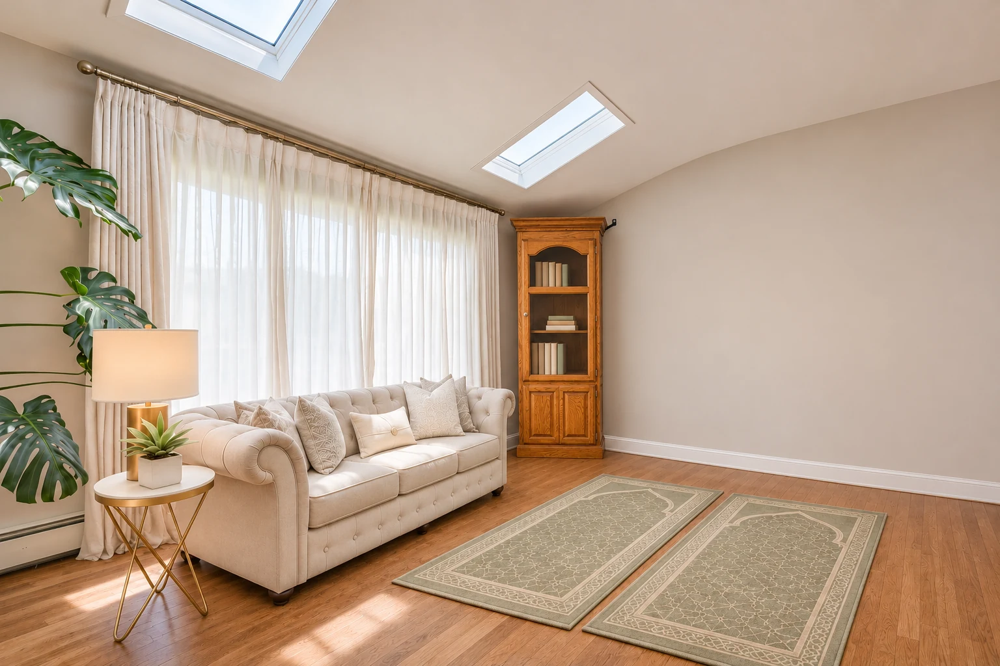
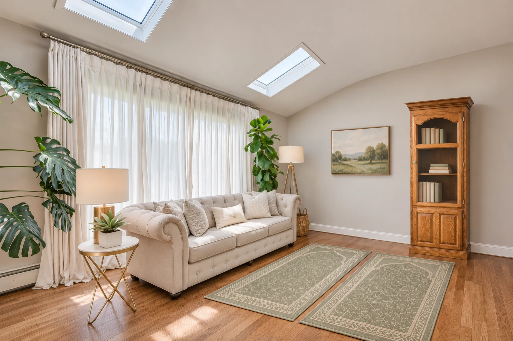

Reuse · restore · make space
Your oak bookshelf,
tucked into the corner.
A restored version of the narrow oak cabinet, placed against the solid wall near the curtained corner of the prayer and reading room.


Make the actual installation secure
- Anchor the cabinet’s sound structural frame to wall studs or suitable masonry with an appropriate furniture restraint. Corner placement alone does not prevent tipping.
- Keep seating far enough away to discourage climbing. Measure door access and retain the required heater clearance and space from curtains.
- Inspect the glass, shelf supports and hinges; keep heavier books low and consider a child-resistant door catch.
The small bracket shown is illustrative. Use the restraint manufacturer’s installation instructions for the actual cabinet and wall.
Earlier wall placement for comparison
